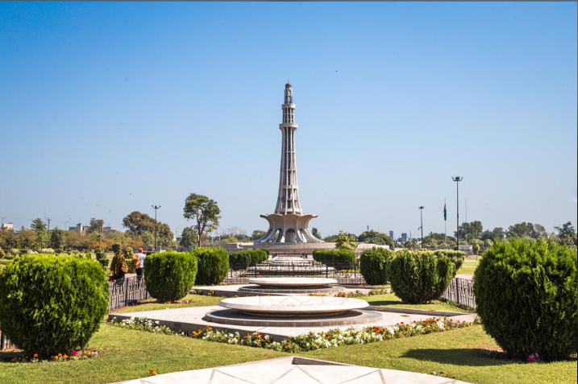

Chalo Lahore Ghoomein✨Discover the beauty, history, and culture of Lahore! |
Every corner of Lahore has a story to tell! From magnificent Mughal monuments to colorful streets and mouth-watering food, explore the beauty of Lahore through these unforgettable glimpses.

A magnificent masterpiece of Mughal architecture,
Badshahi Mosque stands as a symbol of Lahore's
glorious past.Its grand domes, towering minarets
and breathtaking beauty make it one of the city's
most unforgettable landmarks.

Rising proudly in the heart of Lahore, Minar-e-Pakistan
represents the historic struggle for a separate homeland.
This iconic monument reminds us of the Lahore Resolution
of 1940 and the dream that became Pakistan.

Nestled in the hills above Lahore, Shalimar Gardens
are a testament to the grandeur of Mughal architecture.
These terraced gardens, built by Emperor Shah Jahan,
offer a serene escape with their lush greenery and
intricate water features.

As the sun sets, Lahore Fort transforms into a magical
spectacle of lights and shadows. This historic fortress,
with its majestic walls and grand architecture, tells
tales of Lahore's rich history and cultural heritage.
Few Beautiful destinations, countless unforgettable stories! Lahore is not just a city to explore, but a collection of memories waiting to be made. ❤️